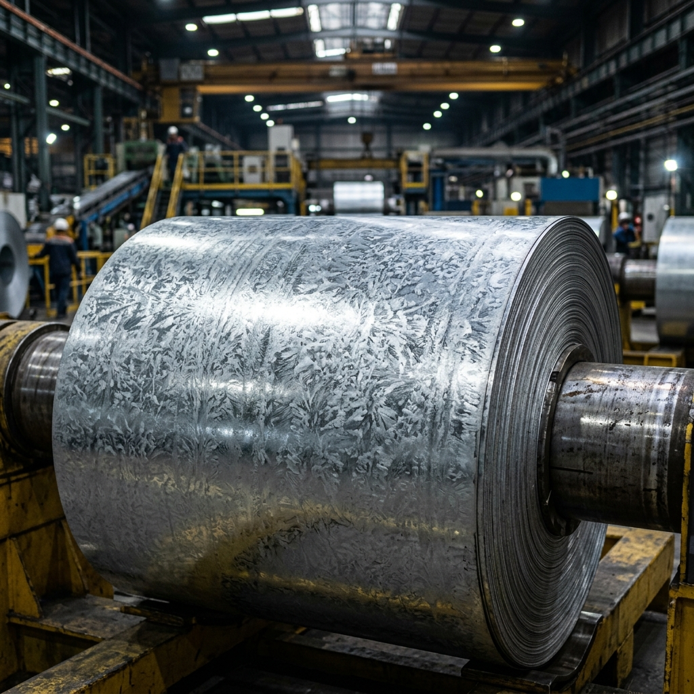
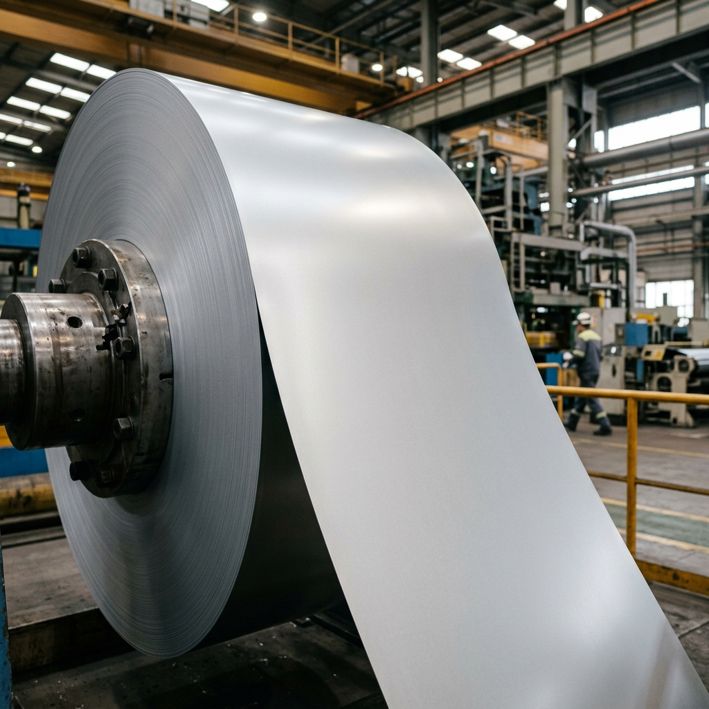
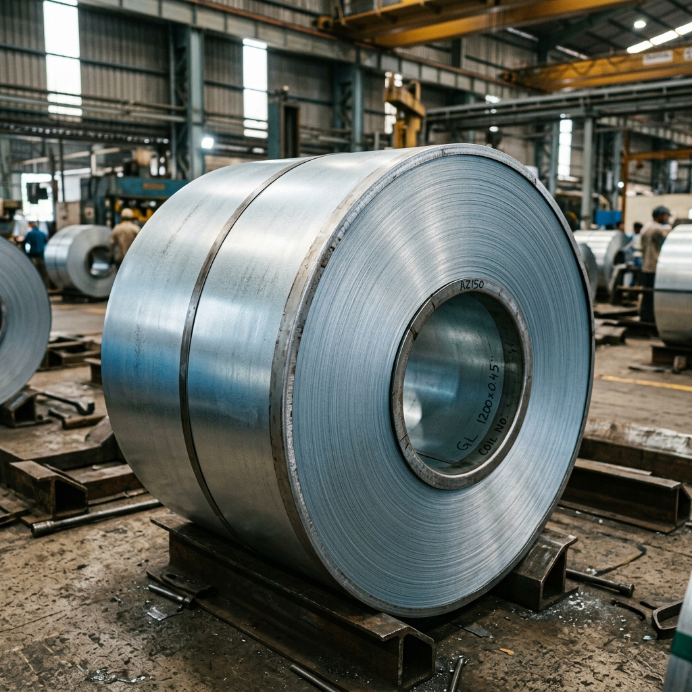
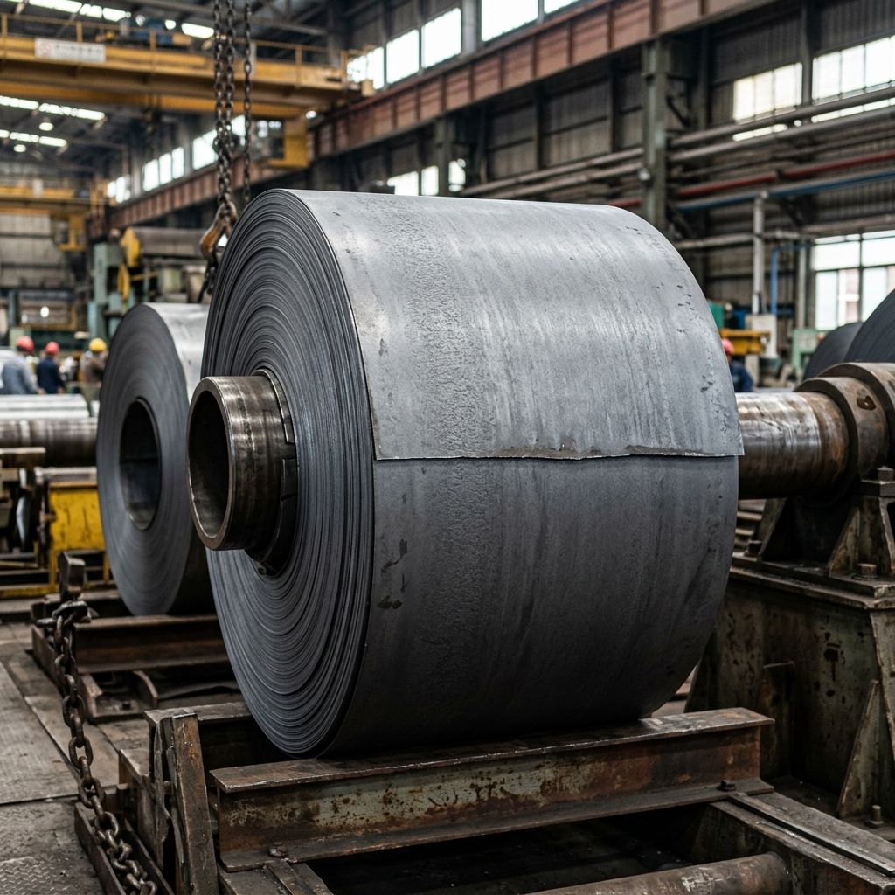

GP vs GPSP vs GL vs GA: Visual Comparison & Best Use Cases

Choosing the right coated steel for a project can be confusing because the market offers several similar‑sounding products. Below we break down the four most common coatings – GP, GPSP, GL and GA – focusing on their visual appearance, technical characteristics, and the industries that benefit most from each.
GP – Galvanised Plain
GP is the most widely used coated steel in India. It is produced by passing cold-rolled base steel through a bath of molten zinc — a process called continuous hot-dip galvanising. The result is a characteristic silver-grey surface with a visible spangle (crystalline zinc) pattern. As produced by mills like AM/NS India and SAIL, the spangle size can be controlled but is always present. Best for: roofing, fencing, general construction, agricultural sheds, and HVAC ducting where aesthetics are secondary.
GPSP – Galvanised Plain Skin Passed

GPSP takes the GP coil and runs it through a final light cold-rolling step (skin passing or temper rolling). This completely flattens the zinc spangles, producing an ultra-smooth, uniform, matte silver-white finish with zero visible spangle. Tata Steel markets this as Galvano. Best for: automotive outer panels, refrigerators, washing machines, premium architectural cladding — any application requiring a perfect, paint-ready base.
GL – Galvalume (Aluminium-Zinc Coated)

GL (also called Aluzinc or Galvalume) uses a zinc-aluminium alloy coating (typically 55% Al, 43% Zn, 2% Si) instead of pure zinc. This gives the surface a distinctive cool silver-grey to slightly bluish metallic sheen — almost aluminium-like in appearance. As offered by Tata Steel under Tata Shaktee for roofing, GL provides far superior heat and corrosion resistance compared to GP. Best for: industrial roofing, coastal warehouses, solar mounting structures, self-colour architectural applications.
GA – Galvannealed (Zinc-Iron Alloy)

GA (Galvannealed) is produced by annealing the sheet immediately after galvanising. This causes the zinc to diffuse into the steel, creating a zinc-iron alloy layer that has a completely dull, dark grey matte surface with no spangle and no reflectivity. This ash-grey finish is preferred by automotive OEMs like Maruti, Hyundai, and Tata Motors because it offers superior weldability and paint adhesion. Best for: automotive structural parts, unexposed body panels, heavy industrial equipment.
Quick Visual Reference
- GP – Shiny silver-grey with visible crystalline spangle.
- GPSP – Smooth, matte, spangle-free, almost white-silver appearance.
- GL – Cool blue-silver metallic sheen, aluminium-like, no spangle.
- GA – Dull dark grey, completely matte, rough texture, no reflectivity.
Technical Comparison Table
| Feature | GP (Galvanised Plain) | GPSP (Skin Passed) | GL (Galvalume) | GA (Thick‑Zinc Galvanised) |
|---|---|---|---|---|
| Coating Composition | Zinc only (≈ 0.5‑0.9 mm) | Zinc only, same thickness as GP | Zinc‑Aluminium‑Magnesium alloy (≈ 0.3‑0.5 mm) | Pure zinc, thicker (≈ 0.9‑1.2 mm) |
| Surface Appearance | Spangle (crystalline zinc pattern) | Matte, spangle‑free, smooth | Silver‑grey, metallic sheen | Bright yellow‑gold, pronounced spangle |
| Corrosion Resistance | Good for general indoor/outdoor use | Same as GP (zinc) but edge‑self‑healing unchanged | Excellent in coastal & high‑chloride environments (Al‑Mg boost) | Very high for harsh industrial atmospheres |
| Paintability | Requires primer; spangle may show through | Ideal – smooth surface gives flawless paint finish | Good – metal‑like finish works well with powder coating | Acceptable – needs proper surface preparation |
| Typical Thickness Range (base steel) | 0.14 mm – 2.0 mm | 0.14 mm – 2.0 mm | 0.18 mm – 1.5 mm (commonly 0.4‑0.8 mm) | 0.14 mm – 2.0 mm |
| Best Industries / Applications | Roofing, fencing, general construction, agricultural sheds. | Automotive panels, white‑goods (refrigerators, washing machines), high‑end architectural cladding. | Roofing in coastal zones, industrial warehouses, solar mounting structures, HVAC ducts. | Heavy‑duty industrial equipment, marine‑adjacent structures, high‑temperature environments. |
How to Choose the Right Coating
Consider the following decision points:
- Visual Finish Required? If you need a pristine, paint‑ready surface, GPSP is the clear winner.
- Corrosion Environment? For salty or coastal exposure, GL (Galvalume) or GA (thick zinc) provide superior protection.
- Cost Sensitivity? GP is the most economical option for standard roofing and fencing.
- Formability Needs? GPSP’s skin‑passed surface reduces stretcher‑strain, making deep‑draw operations smoother.